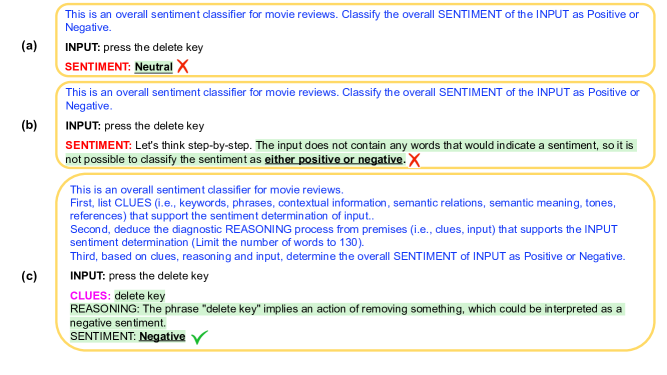
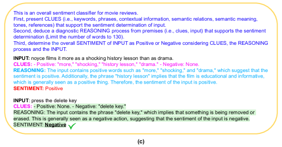

Text Classification via Large Language Models
Abstract
Despite the remarkable success of large-scale Language Models (LLMs) such as GPT-3, their performances still significantly underperform fine-tuned models in the task of text classification. This is due to (1) the lack of reasoning ability in addressing complex linguistic phenomena (e.g., intensification, contrast, irony etc); (2) limited number of tokens allowed in in-context learning.
In this paper, we introduce Clue And Reasoning Prompting (CARP). CARP adopts a progressive reasoning strategy tailored to addressing the complex linguistic phenomena involved in text classification: CARP first prompts LLMs to find superficial clues (e.g., keywords, tones, semantic relations, references, etc), based on which a diagnostic reasoning process is induced for final decisions. To further address the limited-token issue, CARP uses a fine-tuned model on the supervised dataset for NN demonstration search in the in-context learning, allowing the model to take the advantage of both LLM’s generalization ability and the task-specific evidence provided by the full labeled dataset.
Remarkably,
CARP yields new SOTA performances on 4
out of 5 widely-used text-classification benchmarks, 97.39 (+1.24) on SST-2, 96.40 (+0.72) on AGNews, 98.78 (+0.25) on R8 and 96.95 (+0.6) on R52,
and a performance comparable to SOTA on MR (92.39 v.s. 93.3).
More importantly, we find that CARP delivers impressive abilities
on low-resource
and domain-adaptation
setups.
Specifically,
using 16 examples per class, CARP achieves comparable performances to supervised models with 1,024 examples per class. Code and data are available at github.com/ShannonAI/GPT-CLS-CARP
111 * indicates equal contributions.
222 ◆Zhejiang University, ♣ Shannon.AI, ★Amazon
Nanyang Technological University,
▲ Chongqing University
{xiaofei_sun, wufei, jiwei_li}@zju.edu.cn
xiaoya_li@shannonai.com, swguo@cqu.edu.cn
tianwei.zhang@ntu.edu.sg,
guoyiwan@amazon.com
1 Introduction
Large language models (LLMs) (Radford et al., 2019a; Xue et al., 2020; Zhang et al., 2022a; Rae et al., 2021; Brown et al., 2020; Chowdhery et al., 2022; Ouyang et al., 2022; Thoppilan et al., 2022) have shown the ability for in-context learning (ICL). Given a few demonstration examples, LLMs are prompted to generate results for a new test example, and have achieved performance comparable to supervised baselines or even state-of-the-art results in a variety of natural language processing (NLP) tasks such as question answering (Trivedi et al., 2022), natural language inference, (Schick and Schütze, 2020), named entity recognition Wang et al. (2023), relation extraction Wan et al. (2023) and information extraction (Han et al., 2021).


In spite of the success, LLMs with ICL still significantly underperform fine-tuned models for text classification. This is due to two reasons: (1) Text classification requires models with more powerful reasoning abilities to resolve complex linguistic phenomenon including clause composition (e.g., concession, negation, intensification), irony, etc. Recent efforts to improve LLMs’ reasoning capabilities (Wei et al., 2022b; Kojima et al., 2022; Ye and Durrett, 2022; Zhang et al., 2022b) mainly focus on tackling math problems, and thus are not tailored to addressing the reasoning process necessary for the multitude of intricate linguistic phenomena in text classification; (2) This number of demonstration examples allowed in in-context learning is limited, e.g., the longest context allowed for GPT-3 is 4,096 subtokens. Therefore, LLMs are only able to take the advantage of a small proportion of the training set, performing well below supervised baselines;
In this paper, we introduce Clue And Reasoning Prompting (CARP), an extensible, annotation-free and efficient framework for text classification via large language models. To address the reasoning process necessary for handling the linguistic phenomena in text classification, CARP decomposes the reasoning process into three steps, where LLMs are first prompted to find superficial clues (e.g., keywords, tones, semantic relations, etc) in the given text; next, CARP treats the clues and input as premises and induce a diagnostic reasoning process; and finally determine the final label considering the above two steps. We find this progressive reasoning strategy to be effective in enhancing LLMs’ ability in language reasoning involved in text classification. Due to the limited number of tokens allowed in context, a more effective demonstration search is needed. CARP uses a fine-tuned model on the supervised dataset for NN demonstration search for in-context learning. Since the fine-tuned model is trained based on task-specific labels, it guarantees that retrieved samples are close to the input sequence with respect to the task. Using fine-tuned models for demonstration search provides a channel to connect LLMs with the full training set, in spite of the limited number of tokens allowed in demonstrations. This strategy lets the model take the advantage of both the LLMs’ generalization abilities and all task-specific evidence provided by the training dataset.
Remarkably, CARP yields new SOTA performances on four out of 5 widely-used text-classification benchmarks, 97.39 (+1.24) on SST-2, 96.40 (+0.72) on AGNews, 98.78 (+0.25) on R8 and 96.95 (+0.6) on R52, and a performance comparable to SOTA on MR (92.39 v.s. 93.3). More importantly, we find that CARP delivers impressive ability on low-resource and domain adaptation setups with orders of magnitude fewer training examples. Specifically, CARP achieves comparable performances with 16 examples per class to supervised models trained on the full training set containing more than 1 thousand examples per class. This demonstrates the capabilities of CARP in real-world text classification cases where training data is limited.
2 Related Work
2.1 Large Language Models
Large language models (LLMs) are models that are trained using self-teaching algorithms on large unlabeled corpora. With emergent capabilities (Xie et al., 2021; Wei et al., 2022a), LLMs achieve significant performance boosts in NLP tasks.
LLMs can be broadly divided into three categories based on the model architecture. The first category is the encoder-only model like BERT (Devlin et al., 2018). BERT (300M) (Devlin et al., 2018) and its variants (Liu et al., 2019; Sun et al., 2020; Clark et al., 2020; Feng et al., 2020; Sun et al., 2021) adopt the pre-training then fine-tuning paradigm for NLP tasks: use masked language models as the main training objective for pretraining, and fine-tune the pretrained model in the annotated downstream datasets.
The second category is the decoder-only models like GPT (Radford et al., 2019a). GPT (Radford et al., 2019a) uses the decoder of an auto-regressive transformer (Vaswani et al., 2017) model for predicting the next token in a sequence. GPT (Radford et al., 2019a) and its variants (Dai et al., 2019; Keskar et al., 2019; Radford et al., 2019b; Chowdhery et al., 2022; Zhang et al., 2022a) also follow the pre-training then fine-tuning paradigm. GPT-3 (175B) (Brown et al., 2020) proposes to formalize all NLP tasks as generating textual responses condition on the given prompt.
The third category is the encoder-decoder models like T5 (Raffel et al., 2020). T5 (11B) (Raffel et al., 2020) and its variants (Lewis et al., 2019; Xue et al., 2020) are encoder-decoder transformer models, which generate new sentences depending on a given input, following the pre-training then fine-tuning paradigm.
2.2 In-context Learning
Unlike the pre-training then fine-tuning paradigm (Devlin et al., 2018), which saves model weights and uses task-specific datasets (i.e., train/valid/test set), in-context learning (ICL) generates textual responses (i.e., label words) conditioning on the given prompt (usually) with a few annotated examples for downstream tasks.
Li and Liang (2021); Zhong et al. (2021); Qin and Eisner (2021) propose to optimize prompts in the continuous space. Rubin et al. (2021); Das et al. (2021); Liu et al. (2021); Su et al. (2022) introduce different strategies for selecting in-context examples. Lampinen et al. (2022) show that explanations of examples in a few-shot prompt lead to a performance boost. Marasović et al. (2021) find that GPT-3 outperforms other models by a large margin in the explanation generation task. Wei et al. (2022b) propose chain-of-thought reasoning and utilized <input, chain-of-thought, output> triples as the prompt for LLMs. Wiegreffe et al. (2021) traine a supervised filter to select explanations generated by GPT-3 on the SNLI and CommonsenseQA tasks.
2.3 Text Classification
Text classification is a task that aims to assign predefined labels (e.g., sentiment polarity, topic, etc) to a given text. Earlier work decouple the task into two steps: (1) extract features using neural models such as RNNs (Irsoy and Cardie, 2014; Yang et al., 2016; Wang et al., 2018; Liu et al., 2016; Xie et al., 2020), CNNs (Kim, 2014; Zhang et al., 2015; Lai et al., 2015; Conneau et al., 2016; Wei and Zou, 2019), GCN (Yao et al., 2019), LLMs (Howard and Ruder, 2018; Sun et al., 2019; Chai et al., 2020; Chen et al., 2020; Lin et al., 2021); and (2) feed extracted features into a classifier (Joulin et al., 2016) to obtain the final label.
Recently, in-context learning has achieved success and changes the paradigm in the text classification task. Schick and Schütze (2020) reformulate input examples into cloze-style phrases and annotate the unlabeled text. Han et al. (2021) design sub-prompts and applied logic rules to compose sub-prompts into final prompts. Liu et al. (2021) retrieve semantically-similar examples to a test sample to formulate its corresponding prompt. Shi et al. (2022) retrieve label-words-similar examples as demonstrations in prompts.
3 Prompt Construction
3.1 Overview
We follow the standard prompt-based in-context learning paradigm. Given an input sequence , the task of assigning a text-class label to an input text is transformed to generating a pre-defined textual response (e.g., positive, negative, etc) conditioning on the prompt using a language model.
3.2 Prompt Construction
The prompt , which is constructed based on , consists of the following three components:
(1) Task description
generally describes the task. For different classification tasks, e..g, sentiment classification, topic classification, etc, descriptions are different. Take the sentiment classification task as an example, the task description is given as follows:
Classify the overall sentiment of the input as positive or negative
(2) Demonstration
consists of a sequence of annotated examples:
where denotes the th input sequence and denotes the text which is transformed from the label, e.g., positive or negative for the binary sentiment classification task. Demonstration serves as two purposes: (1) providing the LLM with evidence to consult on for decision making, which will significantly boost performances; (2) provides an output format that LLM’s outputs need to follow, so that the output, which takes the form of natural language, can be further easily transformed to labels. It is worth noting that demonstrations are only needed for the few-shot learning setup, but not for the zero-shot learning setup.
(3) Input
is the test text sequence to classify.
The prompt for a test input is constructed by concatenating the task description , a sequence of demonstrations , and the test sequence , which can be given as follows:
3.3 Demonstration Sampling
The few-shot setup requires demonstrations sampled from the training set. Strategies that we explore include:
Random Sampling
a straightforward strategy from samplings is to randomly sample examples from the training set for a text sequence .
NN Sampling
The key disadvantage for random sampling is that there is no guarantee that selected samples are semantically related to the input sequence. One straightforward alternative is to sample examples that are similar to the test sequence using NN search (Khandelwal et al., 2020). In this process, the test sequence is first mapped to a vector using an encoder model . Then using as the query, we search through the entire training set to retrieve nearest text sequence to get nearest data examples as demonstrations. We use the following encoder models to obtain sentence representations and similarity scores:
SimCSE
(Gao et al., 2021) is a contrastive learning model for sentence embeddings. We use Sup-SimCSE-RoBERTa-Large model as an encoder model, which is initizlied with RoBERTa-Large (Liu et al., 2019) and fine-tuned on the natural language inference datasets. SimCSE (Gao et al., 2021) is a semantic-based model and retrieves semantically similar examples, but not necessarily examples with the same labels.
Finetuned Model
FT for short. The key disadvantage for SimCSE (Gao et al., 2021) and other general semantic encoding models (Reimers and Gurevych, 2019; Seonwoo et al., 2022; Sun et al., 2022) is that it measures the general semantic similarity but is not specifically tailored to the text classification task. To resolve this issue, CARP uses the model fine-tuned on the training dataset as the NN encoder model. Specifically, we first fine-tune a Roberta model on the training data. Next we use the [CLS] embedding as the sentence level representation for KNN search. Since the fine-tuned model is trained based on task-specific labels, it guarantees that retrieved samples are close to the input sequence with respect to the task. Using fine-tuned model provides a channel to connect LLMs with the full training set, in spite of the limited number of tokens allowed in demonstrations. This strategy lets the model take the advantage of both the LLMs’ generalization abilities and all task-specific evidence provided by the training dataset.
4 Clues Collecting and Reasoning
To enhance the models’ reasoning ability in addressing linguistic phenomenon tailored to text classification, we propose a progressive reasoning strategy that involves clue collection, reasoning and decision making. This process also mimics how human decisions: where we first collect evidence from the input, separating chaff from wheat; next we piece together local evidence to form a global picture, which leads to final decision making. Next we first given an overview of the the clue collecting and reasoning process, and then describe implementation details.
4.1 Overview
Collecting Clues
For a test sequence, clues are local fact evidence such as keywords, phrases, contextual information, semantic meaning, semantic relationships, tones, references, etc. The following is an example for clues of an input:
Input: Steers turns in a snappy screenplay that curls at the edges; it’s so clever you want to hate it.
Clues: "snappy", "clever", "want to hate it" are clues for determining the sentiment of the input sentence.
Reasoning
For reasoning, the LLM is prompted to go beyond superficial keywords to mine deeper perspectives, considering language phenomenon such as negation, intensification, irony, etc), and piece together local evidence to form the final decision. The following example shows the reasoning process to decide the sentiment of the above example based on the evidence collected:
1. The phrase "snappy screenplay" implies that the screenplay is of a high quality and is well-crafted.
2. The phrase "curls at the edges" implies that the screenplay is cleverly written.
3. The phrase "so clever you want to hate it" is a paradoxical statement, which suggests that the sentiment is positive despite the use of the word "hate".
Decision Making
Based on the reasoning process, the model makes the decision for the sentiment of the given input:
Overall, the clues and reasoning process point to a positive sentiment for the input sentence.
The merits for the incorporation of clue finding and reasonings are as follows: (1) it prompts the model to progressively think and make decisions: clue finding focuses more on superficial features such as keywords, while reasoning makes deeper justifications based on superficial features. This process better mimics how we humans decide; (2) clue finding and reasoning serve as a tunnel to let human intervene: in the few-shot setup, where clues and reasons need to be prepared in advance for demonstrations, we can modify them as we see fit. This is extremely helpful for trouble shooting in the prompt-construction stage for error corrections; (3) from an interpretation and uncertainty estimation perspective, clues and reasoning in few-shot setups are human-readable influence functions; (4) in contrast to list annotated (text, label) pairs in few-shot setups, incorporating clues and reasoning process in prompts aligns closer with the instruction tuning objective. The discrepancy between LLMs training objectives and in-context learning for downstream tasks has been reduced.
4.2 Collecting clues and reasoning in zero-shot
In the zero-shot setup, as no demonstration is allowed, no concrete example for clues and reasons can be provided. In this way, we only add requests asking the model to output clues and reasons in the prompt. The prompt is given as follows:
This is an overall sentiment classifier for opinion snippets.
First, list CLUES (i.e., keywords, phrases, contextual information, semantic relations, semantic meaning, tones, references) for determining the overall sentiment of the input.
Next, deduce a diagnostic reasoning process from clues and the input to determine the overall sentiment.
Finally, determine the sentiment of input as Positive or Negative considering clues, the reasoning process and the input.
INPUT: <text>
CLUES:
4.2.1 Clue Collecting and Reasoning in few-shot
In the few-shot setup , we need to prepare clues and reasonings for all examples in the training set in advance as all training examples have chances to be selected as demonstrations given different test inputs. Previous efforts in math problems Wei et al. (2022b); Kojima et al. (2022); Ye and Durrett (2022); Zhang et al. (2022b) prepare hand-drafted reasoning for a few examples, and always use these example as demonstrations. This strategy does not fit for our situation as it is extremely time-intensive to manually generate clues and reasonings for all training examples, To resolve this issue, we harness LLMs for automatic clue and reasoning generation, where we ask LLMs to generate clues and reasoning based on both the input and its corresponding label.
| INPUT & GOLD LABEL | CLUES | REASONING |
|---|---|---|
|
INPUT: johnnie to and wai ka fai are sure to find an enthusiastic audience among american action adventure buffs, but the film ’s interests may be too narrow to attract crossover viewers
GOLD LABEL: Negative |
- Positive Clues: enthusiastic, action, adventure.
- Negative Clues: narrow, crossover |
The diagnostic reasoning process supporting the sentiment determination of the input is that the phrase "johnnie to and wai ka fai are sure to find an enthusiastic audience among american action adventure buffs" suggests that the film is likely to be well-received by this specific demographic. However, the subsequent phrase "but the film’s interests may be too narrow to attract crossover viewers" implies that the film is unlikely to appeal to a broader audience, suggesting a negative sentiment. Therefore, the overall sentiment of the input is negative. |
|
INPUT: moore sell globe unit moore resources inc said agreed principle sell globe inc unit cyprus minerals co undisclosed terms sale expected close mid april subject certain conditions including board approval companies globe produces silicon metals products used chemical aluminum iron rubber semiconductor industries reuter
GOLD LABEL: Acquisitions |
- Acquisition (agreed, sell, unit, sale, close, board approval)
- Companies (Moore Resources Inc, Globe Inc, Cyprus Minerals Co) - Products (silicon, metals, chemical, aluminum, iron, rubber, semiconductor) - Reuter (news agency) |
The input mentions an acquisition agreement between Moore Resources Inc and Globe Inc, and the sale is expected to close in mid-April, suggesting an Acquisitions topic. The input also mentions Cyprus Minerals Co, silicon and metals products which are used in chemical, aluminum, iron, rubber, and semiconductor industries, and a Reuter news agency, all of which support the Acquisitions topic. |
Clue Generation
For a given training example <text> paired with the label word <label-word> (e.g., positive), we ask LLM to generate clues that indicate the label:
List CLUES (i.e., keywords, phrases, contextual information, semantic meaning, semantic relationships, tones, references) that support the sentiment determination of the input (limit to 15 words).
INPUT: <text>
SENTIMENT: <label-word>
Reasoning Generation
Based on clues generated clues, the input, and the label, we ask LLMs to generate reasoning details333LLMs often generate long responses, in order to ensemble more demonstrations in prompts, we use ”limit to 50 words”. After conducting an analysis of the generated responses, we find that LLMs can explain the reason within limited words.:
Based on the input and clues, articulate the diagnostic reasoning process that supports the sentiment determination of the input.
INPUT: <text>
LABEL: <label-word>
CLUES: <clues>
REASONING:
Given the generated clues and reasonings for all training examples, at test time, when K-nearest examples are selected demonstrations, its corresponding clues and reasons are concatenated to the demonstration. In this way, each demonstration example is composed by a (text, clues, reasons, golden label word) pair. The prompt is thus given as follows:
This is a sentiment classifier for input opinion snippets.
List CLUES (i.e., keywords, phrases, contextual information, semantic meaning, semantic relationships, tones, references) that support the sentiment determination of the input.
Next, deduce the diagnostic REASONING process from premises (i.e., clues, input) that support the sentiment determination.
Finally, based on clues, the reasoning and the input, categorize the overall SENTIMENT of input as Positive or Negative.
input: <demo-text-1>
clues: <demo-clues-1>
reasoning: <demo-reason-1>
sentiment: <demo-label-word-1>
input: <demo-text-2>
clues: <demo-clues-2>
reasoning: <demo-reason-2>
sentiment: <demo-label-word-2>
… …
input: <demo-text-n>
clues: <demo-clues-n>
reasoning: <demo-reason-n>
sentiment: <demo-label-word-n>
input: <text>
Examples for prompts with clues and reasons are shown in Figure 2. In this way, for a test example, by following the format of demonstrations, the LLM will first output clues, then reasons, and at last decisions.
4.3 Voting
Unlike conventional discriminative models for text classification, which generate deterministic results during inferences, LLMs for in-context learning are generative models and generate distinct textual responses with diverse sampling strategies in multiple runs. We consider the following voting strategies in the paper:
-
•
Majority Vote: the final result is the most frequent prediction among multiple runs.
-
•
Weighted Probability Vote: the final result is the one with weighted summed probability from multiple runs.
| SST-2 | AGNews | R8 | R52 | MR | Average | |
| Supervised Methods | ||||||
| RoBERTa-Large (Liu et al., 2019) | 95.99 | 95.55 | 97.76 | 96.42 | 91.16 | 95.38 |
| DeBERTa (He et al., 2020) | 94.75 | 95.32 | 98.33 | 96.32 | 90.19 | 94.99 |
| RoBERTa-GCN (Lin et al., 2021) | 95.80 | 95.68* | 98.2 | 96.1 | 89.7 | 95.10 |
| XLNet (Yang et al., 2019) | 96.10* | 95.55 | - | - | - | - |
| VLAWE (Ionescu and Butnaru, 2019) | - | - | - | - | 93.3* | - |
| GCN-SB (Zeng et al., 2022) | - | - | 98.53* | 96.35* | 87.59 | - |
| Zero-shot Setting | ||||||
| Vanilla (Brown et al., 2020) | 91.55 | 90.72 | 90.19 | 89.06 | 88.69 | 90.04 |
| CoT (Kojima et al., 2022) | 92.11 | 91.25 | 90.48 | 91.24 | 89.37 | 90.89 |
| CARP | 93.01 | 92.60 | 91.75 | 91.80 | 89.94 | 91.82 |
| Few-shot Setting (=16) | ||||||
| Random Sampler | ||||||
| Vanilla (Brown et al., 2020) | 92.36 | 91.74 | 91.58 | 91.56 | 89.15 | 91.28 |
| CoT (Kojima et al., 2022) | 94.56 | 95.02 | 92.49 | 92.03 | 89.91 | 92.80 |
| CARP | 96.20 | 95.18 | 97.60 | 96.19 | 90.03 | 95.04 |
| SimCSE NN-Sampler | ||||||
| Vanilla (Brown et al., 2020) | 93.90 | 93.50 | 94.36 | 92.40 | 89.59 | 94.05 |
| CoT (Kojima et al., 2022) | 94.21 | 94.28 | 95.07 | 92.98 | 90.27 | 93.69 |
| CARP | 95.69 | 95.25 | 97.83 | 96.27 | 90.74 | 95.16 |
| FT NN-Sampler | ||||||
| Vanilla (Brown et al., 2020) | 94.01 | 94.14 | 95.57 | 95.79 | 90.90 | 94.08 |
| CoT (Kojima et al., 2022) | 95.48 | 94.89 | 95.59 | 95.89 | 90.17 | 94.40 |
| CARP | 96.80 | 95.99 | 98.29 | 96.82 | 91.90 | 95.97 |
| CARP (WP Vote) | 97.39 | 96.40 | 98.78 | 96.95 | 92.39 | 96.38 |
5 Experiments
In order to evaluate the effectiveness of the proposed method, we conduct experiments on two setups: (1) full training setup, where the model has the access to the full training data; and (2) low-resource setup, where the model can only access partial training dataset. The low-resource setup better mimics real-world situations where training data is limited. For the full training setup, we follow the standard train/dev/test split. For the low-resource setup, we randomly sample instances per class ( in ) from the benchmark training set. The sampled subset forms a new training set to test different models’ abilities in the low-resource situations. During experiments, we train models/sample demonstrations with the new training set.
We conduct experiments on five widely-used datasets, including SST-2 (Socher et al., 2013), R8, R52444R8 and R52 are original from https://www.cs.umb.edu/~smimarog/textmining/datasets/, AGNews (Zhang et al., 2015) and Movie Review (MR) (Pang and Lee, 2005). More details of the benchmarks and low-resource datasets can be found in Appendix LABEL:app:dataset.
For zero-shot and few-shot experiments, we use InstructGPT-3 (Ouyang et al., 2022) (text-davinci-003, 175B) as the backbone. Due to the input token limitation, we use for few-shot setups. Prompts on the five datasets are shown in Appendix LABEL:app:prompt. Model hyper-parameters can be found in Table 3 555During experiments, we find that CARP is robust with different hyper-parameters. Experimental results can be found in Appendix B.2.
We use Vanilla to denote the conventional ICL approach where LLMs are directly prompted to generate labels. We use CoT (Kojima et al., 2022) to denote the baseline that mimics the chain-of-thought strategy and use CARP to denote the proposed method.
5.1 Models for Comparison
Supervised models
trained on the trained set naturally constitute baselines to compare with. We use the following models as baselines, and more details of hyper-parameters are shown in Appendix B.1:
-
•
RoBERTa-Large:We fine-tune RoBERTa-Large (Liu et al., 2019) on the training set.
- •
-
•
DeBERTa:He et al. (2020) improve RoBERTa by using disentangled attention mechanism and an enhanced mask decoder.
-
•
XLNet:Yang et al. (2019) propose a generalized autoregressive pretraining method that enables learning bidirectional contexts.
-
•
GCN-SB:Zeng et al. (2022) propose a simplified boosting algorithm, which makes CNN learn the samples misclassified by GCN again.
-
•
VLAWE:Ionescu and Butnaru (2019) obtain document embeddings based on aggregating the differences between each codeword vector and each word vector (from the document) associated to the respective codeword.
Few-shot Setup
For demonstration sample strategies in the few-shot setup, we consider the following strategies for comparison: (more details can be found in Section 3.3):
-
•
Random Sampler: randomly samples examples.
-
•
SimCSE NN-Sampler: samples nearest examples based on SimCSE (Gao et al., 2021) representations666Specifically, we use Sup-SimCSE-RoBERTa-Large as the text encoder..
-
•
FT NN-Sampler: sample nearest examples using Fine-Tuned RoBERTa-Large representations.
| Parameter | Value |
|---|---|
| Engine Name | text-davinci-003 |
| Max Tokens | 200 |
| Temperature | 0.7 |
| Top P | 1 |
| Frequency Penalty | 0.0 |
| Presence Penalty | 0.0 |
| Best Of | 1 |
5.2 Results on the full training set
Experimental results are shown in Table 2. As can be seen, performances of few-shot setups consistently outperform zero-shot setups. In terms of sampling strategies in the few-shot setups, we observe that simcse KNN-sampler outperform random sampler, illustrating the importance of adding demonstrations that are relevant to the test input in the few-shot setup. We also observe that FT KNN-sampler consistently outperforms simcse KNN-sampler. This shows that, the fine-tuned model, which takes the advantage of the full training set, serves as a better retriever for task-specific demonstration retrieval than the general-purposed simcse retriever.
For different reasoning strategies, we first observe that the CoT strategy outperforms the vanilla strategy, which straightforwardly asks LLMs to generate results without further reasoning steps. CARP consistently outperforms CoT across all benchmarks, i.e., +1.48, +0.97, +2.76, + 3.29, +0.47 respectively on SST-2, AGNews, R8, R52 and MR datasets. This demonstrates the necessity of building models with complex linguistic phenomena involved in text classification, and the effectiveness of CARP in doing this job.
Compared with supervised learning baselines, we find that the vanilla model using LLM underperforms supervised baselines, while few-shot CoT is able to obtain slightly worse or comparable results agains supervised baselines. Notably, single CARP outperforms fine-tuned RoBBERTa on all benchmarks. Using WP voting strategies, CARP yields new SOTA performances on four out of the 5 datasets, 97.39 on SST-2 (+1.24), 96.40 (+0.72) on AGNews, 98.78 (+0.25) on R8 and 96.95 (+0.6) on R52, and a performance comparable to SOTA on MR (92.39 v.s. 93.3).
5.3 Results on low-resource settings
To estimate low-resource circumstances, we sample instances for each class as low-resource setups. Experimental results are shown in Table 4. As can be seen, when the training set size is extremely small (i.e., 16 or 128 sentences), and the performance of the supervised model is far below CARP. Even with only 16 examples to train on, the accuracy of CARP of SST-2 already around 90%, whereas supervised models’ performance is similar to random guess. This demonstrates the strong generalization ability of CARP in the low-resource setup. As we anticipated, the NN search efficiency improved at a faster rate as the amount of the training data increases; Enlarging the training dataset increases the chances that the chosen examples will correspond to the input, resulting in improved results. Specifically, using 16 examples per class, CARP achieves comparable performances to supervised models with 1,024 examples per class; using 512 instance per class annotation data, CARP achieves comparable performances to supervised models trained on the full set.
| Dataset | Model | =16 | =128 | =256 | =512 | =1024 |
|---|---|---|---|---|---|---|
| FT RoBERTa | 51.52 | 52.31 | 53.89 | 70.49 | 90.30 | |
| SST-2 | GPT-3 Vanilla | 90.15 | 90.36 | 91.70 | 93.86 | 94.68 |
| GPT-3 Zero-shot-CoT | 89.66 | 90.19 | 90.80 | 94.42 | 94.89 | |
| GPT-3 CRAP | 90.48 | 91.07 | 91.77 | 94.03 | 95.20 | |
| AGNews | FT RoBERTa | 21.87 | 38.19 | 40.08 | 50.18 | 78.09 |
| GPT-3 Vanilla | 89.47 | 89.63 | 90.54 | 93.02 | 94.79 | |
| GPT-3 Zero-shot-CoT | 89.66 | 90.16 | 91.70 | 94.86 | 95.28 | |
| GPT-3 CRAP | 90.16 | 90.94 | 91.07 | 94.08 | 95.48 | |
| R8 | FT RoBERTa | 11.29 | 48.19 | 60.18 | 70.70 | 88.68 |
| GPT-3 Vanilla | 89.15 | 90.27 | 91.70 | 94.00 | 94.91 | |
| GPT-3 Zero-shot-CoT | 90.49 | 90.88 | 91.81 | 95.42 | 95.75 | |
| GPT-3 CRAP | 90.23 | 91.03 | 91.77 | 95.56 | 96.67 | |
| R52 | FT RoBERTa | 38.29 | 39.10 | 59.18 | 67.19 | 81.53 |
| GPT-3 Vanilla | 89.15 | 90.04 | 90.29 | 91.88 | 92.06 | |
| GPT-3 Zero-shot-CoT | 89.46 | 90.02 | 90.73 | 93.20 | 94.12 | |
| GPT-3 CRAP | 90.82 | 91.00 | 95.85 | 94.36 | 96.27 | |
| MR | FT RoBERTa | 51.20 | 52.11 | 53.58 | 68.29 | 88.37 |
| GPT-3 Vanilla | 86.04 | 88.68 | 88.99 | 89.80 | 90.18 | |
| GPT-3 Zero-shot-CoT | 86.26 | 89.00 | 90.01 | 90.16 | 90.89 | |
| GPT-3 CRAP | 86.54 | 87.19 | 89.63 | 90.01 | 91.20 |
5.4 Domain Adaptation
It is unclear whether it is essential to train models on the specific dataset for retrieving demonstrations. In this subsection, we conduct an analysis on using demonstrations from out-of-distribution datasets.
We use SST-2 and Yelp, and the task is to determine the positive or negative polarity of the given text. SST-2 and Yelp are from different domains: SST-2 are snippets from Rotten Tomatoes777https://www.rottentomatoes.com/, whereas Yelp888https://drive.google.com/drive/folders/0Bz8a_Dbh9Qhbfll6bVpmNUtUcFdjYmF2SEpmZUZUcVNiMUw1TWN6RDV3a0JHT3kxLVhVR2M?resourcekey=0-TLwzfR2O-D2aPitmn5o9VQ&usp=share_link consists of product reviews from the online website.
| FT RoBERTa on | FT RoBERTa on | |
| SST-2 Train | Yelp Train | |
| SST-2 Test | 95.99 | 88.78 |
| Yelp Test | 92.38 | 96.04 |
| \cdashline1-3 | CARP with | CARP with |
| SST-2 demon. | Yelp demon. | |
| SST-2 Test | 96.80 | 96.29 |
| Yelp Test | 95.94 | 96.32 |
Experimental results are shown in Table 5.4. SST-2 train & SST-2 test means that demonstrations are from the SST-2 dataset and test is performed on SST-2 dataset; Yelp train & SST-2 test means demonstrations are from yelp and test is performed on SST-2 dataset. We see a significant decrease (-7.2%, 95.99% v.s.88.78% ) in performance when switching SST-2 train to Yelp-2 train using supervised RoBERTa, which illustrates that supervised models are very sensitive to the out-of-distribution data. On the contrary, we only observe a slight decrease in performance (-0.5%, 96.80% v.s. 96.29%) when switching SST-2 train to Yelp-2 train on SST-2 test, illustration the greater capabilities of CARP on the domain adaptation situations.
This means CARP is very robust when training and test are not from the same domain. On the contrary,
| SST-2 | AGNews | R8 | R52 | MR | Average | |
| Supervised Methods | ||||||
| RoBERTa-Large | 95.99 | 95.55 | 97.76 | 96.42 | 91.16 | 95.38 |
| RoBERTa-GCN | 95.80 | 95.68 | 98.2 | 96.1 | 89.7 | 95.10 |
| Zero-shot Setting | ||||||
| Vanilla | 91.55 | 90.72 | 90.19 | 89.06 | 88.69 | 90.04 |
| Zero-shot-CoT | 92.11 | 91.25 | 90.48 | 91.24 | 89.37 | 90.89 |
| CARP | 94.41 | 93.18 | 93.29 | 92.69 | 90.03 | 92.72 |
| Few-shot Setting | ||||||
| Random Sampler | ||||||
| Vanilla | 91.36 | 91.48 | 90.60 | 90.68 | 89.15 | 90.65 |
| Zero-shot-CoT | 92.56 | 92.65 | 92.49 | 92.03 | 89.91 | 91.93 |
| CARP | 94.41 | 93.18 | 93.29 | 92.69 | 90.03 | 92.72 |
| SimCSE NN-Sampler | ||||||
| Vanilla | 93.90 | 93.50 | 94.36 | 92.40 | 89.59 | 92.75 |
| Zero-shot-CoT | 94.21 | 94.28 | 95.07 | 92.98 | 90.27 | 93.36 |
| CARP | 95.99 | 95.53 | 95.31 | 93.84 | 90.64 | 94.26 |
| FT NN-Sampler | ||||||
| Vanilla | 94.01 | 94.14 | 95.57 | 95.79 | 90.90 | 94.08 |
| Zero-shot-CoT | 95.48 | 94.89 | 95.59 | 95.89 | 90.17 | 94.40 |
| CARP | 96.62 | 95.97 | 98.13 | 96.12 | 91.86 | 95.74 |
6 Ablation Studies
In this section, we conduct comprehensive ablation studies to get a better knowledge about different elements of CARP.
6.1 Impact of the number of demonstrations
We explore the effect of the number of demonstrations in prompts. We conduct experiments on the SST-2 dataset. Results for the vanilla prompting and the CARP schemas using different sampling strategies are shown in Figure 3 and Figure 4, respectively. As can be seen, performances improve as the number of demonstrations increases for both the vanilla and the CARP schemas.
| Prompts | SST-2 | R8 |
|---|---|---|
| CARP | 96.80 | 98.29 |
| w/o Text | 92.28 | 94.18 |
| w/o Clue | 95.48 | 95.29 |
| w/o Reason | 95.72 | 97.82 |
| w/o Label | 96.53 | 98.18 |
6.2 The effect of components in demonstrations
CARP uses (text, clues, reasons, golden label word) pairs as demonstrations. In this subsection, we exploit the influence of each component in (text, clues, reasons, golden label word) by removing it from prompts. Experimental results are shown in Table 7. As shown in Table 7, text in demonstrations has the biggest influence impact of the final results. When (text, clue, reason) as demonstrations, the label has effect to the performances.
6.3 The effect of different types of label words
Label words denote words generated by LLMs that indicate the label of the input. In this subsection, we explore the impact of using different kinds of label words:
-
•
Position index: number of index. i.e., one, two, three and etc to denote the label.
-
•
Annotation words: words used to refer to the category in the annotation file. e.g., positive, negative. 999GPT-3 generates the same label words for binary sentiment classification task.
-
•
Synonyms words: synonyms words e.g., great, terrible.
-
•
Flipped words: words that are contrary to original target meanings. e.g., "positive" to denote the negative polarity, "negative" to denote the positive polarity.
-
•
Random words: randomly choose words in the vocabulary. e.g., order, number.
-
•
Special tokens: tokens that do not have semantic meaning. They are independent of the input and added for a certain purpose. e.g., <cls>, <mask>.
| Strategy | Label Words(+,-) | CARP |
|---|---|---|
| Position Index | One, Two | 95.66 |
| Annotation Words | Positive, Negative | 96.86 |
| Synonyms Words | Great, Terrible | 96.27 |
| Flipped Words | Negative, Positive | 64.63 |
| Random Words | Cf, Ng | 95.06 |
| Special Tokens | <POS>, <NEG> | 96.65 |
Results are shown in Table 8. As can be seen, few-shot ICL with annotation words as label words achieves the best performances. It is also worth noting that we observe a significant performance decrease when flipped words are used as label words in demonstrations.
6.4 The influence of clues
As mentioned in Section 3, clues are keywords, phrases, contextual information, semantic meaning, semantic relationships, tones, references that support making decisions. We remove different types of words in clues and evaluate its influence on SST-2 and R8 datasets. Editing prompts achieve this goal. The original prompt for clue collecting is List CLUES (i.e., keywords, phrases, contextual information, semantic meaning, semantic relationships, tones, references) that support the sentiment determination of the input. If we want to remove keywords & phrases, we just remove them from the prompt.
-
•
w/o keywords & phrases: keywords and phrases are surface evidence for making decisions such as "like", "hate".
-
•
w/o contextual information & semantic meaning: contextual information and semantic meaning are meaning in sentences/paragraphs such as The author express his happiness.
-
•
w/o semantic relationships: semantic relationships refer to relations between subjects such as "emotional danger" suggests a romantic and thrilling relationship between Idemoto and Kim that creates a positive sentiment..
-
•
w/o tones: tones are the general mood of the text such as The sentence is expressed in an objective tone.
-
•
w/o references: references are mentions of commonsense facts or books such as The reference to the popular, comedic character "Ferris Bueller" implies that the kid is seen in a positive light..
| Prompts | SST-2 | R8 |
|---|---|---|
| Clues | 96.80 | 98.29 |
| w/o keyword&phrase | 96.21 | 96.91 |
| w/o contextual info. | 96.23 | 97.10 |
| w/o semantic relations | 96.30 | 97.38 |
| w/o tones | 96.40 | 97.35 |
| w/o reference | 96.50 | 97.19 |
Experimental results are shown in Table 9. For R8 and SST-2 datasets, keywords play the key role for GPT predictions.
6.5 The effect of demonstration order
During experiments, we find that the ranking order of demonstration affect final results. In this subsection, we further investigate the influence of orders of demonstrations. As mentioned in Section 3.3, we retrieved data instances according to the cosine similarity with the test sequence. Orders the demonstrations in the prompt we investigate include:
-
•
Random: randomly shuffle retrieved demonstrations.
-
•
Low-to-High: demonstrations with lower similarity scores come first. Therefore demonstrations with higher similarity scores are placed closer to the test sequence, which is placed at the end of the prompt.
-
•
High-to-Low: demonstrations with lower similarity scores are placed closer to the test sequence.
| Ranking | SimCSE | FT |
|---|---|---|
| CARP | ||
| \cdashline1-3 Random | 95.39 | 95.99 |
| High-to-Low | 95.22 | 96.71 |
| Low-to-High | 96.39 | 96.80 |
As shown in Table 6.5, performance is sensitive the ordering of the demonstrations. The low-to-high ordering achieves the best performance compared to random and high-to-low ordering.
6.6 Quality of the reasoning process
In this paper, we use LLMs to generate rationable explanations instead of human editing. Therefore, the quality of generated reasoning process affects the final results. In this subsection, we sample 500 training (text, clues, reason, label) pairs and evaluate the generated reasoning process from the following perspectives:
(1) Reliability: Inspired by the emergent generalization ability of LLMs, we use zero-shot GPT-3 (175B) as the self-critique model to evaluate the quality of generated reasoning processes. To be specific, we ask the GPT-3 to return yes/no if the generated reasoning process supports making decisions for the input text. If the GPT-3 returns "yes", it denotes that the reasoning process is reliable for making decisions. If the GPT-3 returns "no", it represents that the reasoning process is not reliable.
The prompt for SST-2 is shown as follows:
INPUT: <text> REASONING: <reasoning-process>
where <text> is the text sequence for the data and <reasoning-process> is generated reasoning process.
| Reliability(%) | Fluency(ppl) | Logic Faithful(%) | |
|---|---|---|---|
| SST-2 | 96.18 | 3.89 | 95.20 |
| R8 | 95.34 | 3.29 | 94.55 |
(2) Fluency: use LLMs to generate reasoning explanations is a reference-free text generation task. We use perplexity to evaluate the generated text.
(3) Logic Faithful: previous work often use models, which are trained on natural language inference datasets, to determine whether the given “hypothesis” logically follows from the “premise”. However, lacking annotation datasets, NLI-trained models can not generalize across multiple domains (e.g., opinion, reviews, news). Since then, we use -shot ICL with GPT-3 to evaluate whether the generated rationable explanations can be entailed from the input text. If the InstructGPT responds with "entailment", it denotes that the generated reasoning process is logic faithful with the text. Otherwise, it represents the reasoning process is not faithful to the text. We sample training instances from the SNLI dataset (Bowman et al., 2015) as demonstrations. And prompts are shown as follows:
Given the premise and hypothesis, please justify whether the HYPOTHESIS can be entailed from the PREMISE. Please return yes or no.
PREMISE: <text>
HYPOTHESIS: <reasoning-process>
Evaluation results are shown in Table 11. As can be seen, the reliability percentages for SST-2 and R5 are higher than 95%. This indicates that it is feasible to use the model-generated reasoning process as part of the prompts to augment ICL performances. The perplexity of generated reasoning text is smaller than 4, which denotes that the generated reasoning text is fluent. And scores of logic faithful are larger than 93%, which is in line with our expectation that LLMs can generate reasonable explanations.
7 Conclusion
In this paper, we introduce Clue And Reasoning Prompting (CARP) for text classification task. CARP yields new SOTA performances on 4 out of 5 widely-used text-classification benchmarks. More importantly, we find that CARP delivers impressive abilities on low-resource and domain-adaption setups. In the future, we would like to explore CARP on more natural language understanding tasks.
References
- Bowman et al. (2015) Samuel R. Bowman, Gabor Angeli, Christopher Potts, and Christopher D. Manning. 2015. A large annotated corpus for learning natural language inference. In Proceedings of the 2015 Conference on Empirical Methods in Natural Language Processing (EMNLP). Association for Computational Linguistics.
- Brown et al. (2020) Tom Brown, Benjamin Mann, Nick Ryder, Melanie Subbiah, Jared D Kaplan, Prafulla Dhariwal, Arvind Neelakantan, Pranav Shyam, Girish Sastry, Amanda Askell, et al. 2020. Language models are few-shot learners. Advances in neural information processing systems, 33:1877–1901.
- Chai et al. (2020) Duo Chai, Wei Wu, Qinghong Han, Fei Wu, and Jiwei Li. 2020. Description based text classification with reinforcement learning. In International Conference on Machine Learning. PMLR.
- Chen et al. (2020) Jiaao Chen, Zichao Yang, and Diyi Yang. 2020. Mixtext: Linguistically-informed interpolation of hidden space for semi-supervised text classification. arXiv preprint arXiv:2004.12239.
- Chowdhery et al. (2022) Aakanksha Chowdhery, Sharan Narang, Jacob Devlin, Maarten Bosma, Gaurav Mishra, Adam Roberts, Paul Barham, Hyung Won Chung, Charles Sutton, Sebastian Gehrmann, et al. 2022. Palm: Scaling language modeling with pathways. arXiv preprint arXiv:2204.02311.
- Clark et al. (2020) Kevin Clark, Minh-Thang Luong, Quoc V Le, and Christopher D Manning. 2020. Electra: Pre-training text encoders as discriminators rather than generators. arXiv preprint arXiv:2003.10555.
- Conneau et al. (2016) Alexis Conneau, Holger Schwenk, Loïc Barrault, and Yann Lecun. 2016. Very deep convolutional networks for text classification. arXiv preprint arXiv:1606.01781.
- Dai et al. (2019) Zihang Dai, Zhilin Yang, Yiming Yang, Jaime Carbonell, Quoc V Le, and Ruslan Salakhutdinov. 2019. Transformer-xl: Attentive language models beyond a fixed-length context. arXiv preprint arXiv:1901.02860.
- Das et al. (2021) Rajarshi Das, Manzil Zaheer, Dung Thai, Ameya Godbole, Ethan Perez, Jay-Yoon Lee, Lizhen Tan, Lazaros Polymenakos, and Andrew McCallum. 2021. Case-based reasoning for natural language queries over knowledge bases. arXiv preprint arXiv:2104.08762.
- Devlin et al. (2018) Jacob Devlin, Ming-Wei Chang, Kenton Lee, and Kristina Toutanova. 2018. Bert: Pre-training of deep bidirectional transformers for language understanding. arXiv preprint arXiv:1810.04805.
- Feng et al. (2020) Zhangyin Feng, Daya Guo, Duyu Tang, Nan Duan, Xiaocheng Feng, Ming Gong, Linjun Shou, Bing Qin, Ting Liu, Daxin Jiang, et al. 2020. Codebert: A pre-trained model for programming and natural languages. arXiv preprint arXiv:2002.08155.
- Gao et al. (2021) Tianyu Gao, Xingcheng Yao, and Danqi Chen. 2021. Simcse: Simple contrastive learning of sentence embeddings. arXiv preprint arXiv:2104.08821.
- Han et al. (2021) Xu Han, Weilin Zhao, Ning Ding, Zhiyuan Liu, and Maosong Sun. 2021. Ptr: Prompt tuning with rules for text classification. arXiv preprint arXiv:2105.11259.
- He et al. (2020) Pengcheng He, Xiaodong Liu, Jianfeng Gao, and Weizhu Chen. 2020. Deberta: Decoding-enhanced bert with disentangled attention. ArXiv.
- Howard and Ruder (2018) Jeremy Howard and Sebastian Ruder. 2018. Universal language model fine-tuning for text classification. arXiv preprint arXiv:1801.06146.
- Ionescu and Butnaru (2019) Radu Tudor Ionescu and Andrei M Butnaru. 2019. Vector of locally-aggregated word embeddings (vlawe): A novel document-level representation. arXiv preprint arXiv:1902.08850.
- Irsoy and Cardie (2014) Ozan Irsoy and Claire Cardie. 2014. Deep recursive neural networks for compositionality in language. Advances in neural information processing systems, 27.
- Joulin et al. (2016) Armand Joulin, Edouard Grave, Piotr Bojanowski, and Tomas Mikolov. 2016. Bag of tricks for efficient text classification. arXiv preprint arXiv:1607.01759.
- Keskar et al. (2019) Nitish Shirish Keskar, Bryan McCann, Lav R Varshney, Caiming Xiong, and Richard Socher. 2019. Ctrl: A conditional transformer language model for controllable generation. arXiv preprint arXiv:1909.05858.
- Khandelwal et al. (2020) Urvashi Khandelwal, Angela Fan, Dan Jurafsky, Luke Zettlemoyer, and Mike Lewis. 2020. Nearest neighbor machine translation. arXiv preprint arXiv:2010.00710.
- Kim (2014) Yoon Kim. 2014. Convolutional neural networks for sentence classification. In Conference on Empirical Methods in Natural Language Processing.
- Kojima et al. (2022) Takeshi Kojima, Shixiang Shane Gu, Machel Reid, Yutaka Matsuo, and Yusuke Iwasawa. 2022. Large language models are zero-shot reasoners. ArXiv.
- Lai et al. (2015) Siwei Lai, Liheng Xu, Kang Liu, and Jun Zhao. 2015. Recurrent convolutional neural networks for text classification. In Proceedings of the AAAI conference on artificial intelligence.
- Lampinen et al. (2022) Andrew K Lampinen, Ishita Dasgupta, Stephanie CY Chan, Kory Matthewson, Michael Henry Tessler, Antonia Creswell, James L McClelland, Jane X Wang, and Felix Hill. 2022. Can language models learn from explanations in context? arXiv preprint arXiv:2204.02329.
- Lewis et al. (2019) Mike Lewis, Yinhan Liu, Naman Goyal, Marjan Ghazvininejad, Abdelrahman Mohamed, Omer Levy, Ves Stoyanov, and Luke Zettlemoyer. 2019. Bart: Denoising sequence-to-sequence pre-training for natural language generation, translation, and comprehension. arXiv preprint arXiv:1910.13461.
- Li and Liang (2021) Xiang Lisa Li and Percy Liang. 2021. Prefix-tuning: Optimizing continuous prompts for generation. arXiv preprint arXiv:2101.00190.
- Lin et al. (2021) Yuxiao Lin, Yuxian Meng, Xiaofei Sun, Qinghong Han, Kun Kuang, Jiwei Li, and Fei Wu. 2021. Bertgcn: Transductive text classification by combining gcn and bert. arXiv preprint arXiv:2105.05727.
- Liu et al. (2021) Jiachang Liu, Dinghan Shen, Yizhe Zhang, Bill Dolan, Lawrence Carin, and Weizhu Chen. 2021. What makes good in-context examples for gpt-? arXiv preprint arXiv:2101.06804.
- Liu et al. (2016) Pengfei Liu, Xipeng Qiu, and Xuanjing Huang. 2016. Recurrent neural network for text classification with multi-task learning. arXiv preprint arXiv:1605.05101.
- Liu et al. (2019) Yinhan Liu, Myle Ott, Naman Goyal, Jingfei Du, Mandar Joshi, Danqi Chen, Omer Levy, Mike Lewis, Luke Zettlemoyer, and Veselin Stoyanov. 2019. Roberta: A robustly optimized bert pretraining approach. arXiv preprint arXiv:1907.11692.
- Marasović et al. (2021) Ana Marasović, Iz Beltagy, Doug Downey, and Matthew E Peters. 2021. Few-shot self-rationalization with natural language prompts. arXiv preprint arXiv:2111.08284.
- Ouyang et al. (2022) Long Ouyang, Jeff Wu, Xu Jiang, Diogo Almeida, Carroll L Wainwright, Pamela Mishkin, Chong Zhang, Sandhini Agarwal, Katarina Slama, Alex Ray, et al. 2022. Training language models to follow instructions with human feedback. arXiv preprint arXiv:2203.02155.
- Pang and Lee (2005) Bo Pang and Lillian Lee. 2005. Seeing stars: Exploiting class relationships for sentiment categorization with respect to rating scales. arXiv preprint cs/0506075.
- Qin and Eisner (2021) Guanghui Qin and Jason Eisner. 2021. Learning how to ask: Querying lms with mixtures of soft prompts. arXiv preprint arXiv:2104.06599.
- Radford et al. (2019a) Alec Radford, Jeff Wu, Rewon Child, David Luan, Dario Amodei, and Ilya Sutskever. 2019a. Language models are unsupervised multitask learners.
- Radford et al. (2019b) Alec Radford, Jeffrey Wu, Rewon Child, David Luan, Dario Amodei, Ilya Sutskever, et al. 2019b. Language models are unsupervised multitask learners. OpenAI blog.
- Rae et al. (2021) Jack W Rae, Sebastian Borgeaud, Trevor Cai, Katie Millican, Jordan Hoffmann, Francis Song, John Aslanides, Sarah Henderson, Roman Ring, Susannah Young, et al. 2021. Scaling language models: Methods, analysis & insights from training gopher. arXiv preprint arXiv:2112.11446.
- Raffel et al. (2020) Colin Raffel, Noam Shazeer, Adam Roberts, Katherine Lee, Sharan Narang, Michael Matena, Yanqi Zhou, Wei Li, and Peter J Liu. 2020. Exploring the limits of transfer learning with a unified text-to-text transformer. The Journal of Machine Learning Research, 21(1):5485–5551.
- Reimers and Gurevych (2019) Nils Reimers and Iryna Gurevych. 2019. Sentence-bert: Sentence embeddings using siamese bert-networks. arXiv preprint arXiv:1908.10084.
- Rubin et al. (2021) Ohad Rubin, Jonathan Herzig, and Jonathan Berant. 2021. Learning to retrieve prompts for in-context learning. arXiv preprint arXiv:2112.08633.
- Schick and Schütze (2020) Timo Schick and Hinrich Schütze. 2020. Exploiting cloze questions for few shot text classification and natural language inference. arXiv preprint arXiv:2001.07676.
- Seonwoo et al. (2022) Yeon Seonwoo, Guoyin Wang, Sajal Choudhary, Changmin Seo, Jiwei Li, Xiang Li, Puyang Xu, Sunghyun Park, and Alice Oh. 2022. Ranking-enhanced unsupervised sentence representation learning. arXiv preprint arXiv:2209.04333.
- Shi et al. (2022) Weijia Shi, Julian Michael, Suchin Gururangan, and Luke Zettlemoyer. 2022. Nearest neighbor zero-shot inference. arXiv preprint arXiv:2205.13792.
- Socher et al. (2013) Richard Socher, Alex Perelygin, Jean Wu, Jason Chuang, Christopher D Manning, Andrew Y Ng, and Christopher Potts. 2013. Recursive deep models for semantic compositionality over a sentiment treebank. In Proceedings of the 2013 conference on empirical methods in natural language processing, pages 1631–1642.
- Su et al. (2022) Hongjin Su, Jungo Kasai, Chen Henry Wu, Weijia Shi, Tianlu Wang, Jiayi Xin, Rui Zhang, Mari Ostendorf, Luke Zettlemoyer, Noah A Smith, et al. 2022. Selective annotation makes language models better few-shot learners. arXiv preprint arXiv:2209.01975.
- Sun et al. (2019) Chi Sun, Xipeng Qiu, Yige Xu, and Xuanjing Huang. 2019. How to fine-tune bert for text classification? In Chinese Computational Linguistics: 18th China National Conference, CCL 2019, Kunming, China, October 18–20, 2019, Proceedings 18. Springer.
- Sun et al. (2022) Xiaofei Sun, Yuxian Meng, Xiang Ao, Fei Wu, Tianwei Zhang, Jiwei Li, and Chun Fan. 2022. Sentence similarity based on contexts. Transactions of the Association for Computational Linguistics.
- Sun et al. (2020) Yu Sun, Shuohuan Wang, Yukun Li, Shikun Feng, Hao Tian, Hua Wu, and Haifeng Wang. 2020. Ernie 2.0: A continual pre-training framework for language understanding. In Proceedings of the AAAI conference on artificial intelligence, volume 34.
- Sun et al. (2021) Zijun Sun, Xiaoya Li, Xiaofei Sun, Yuxian Meng, Xiang Ao, Qing He, Fei Wu, and Jiwei Li. 2021. Chinesebert: Chinese pretraining enhanced by glyph and pinyin information. arXiv preprint arXiv:2106.16038.
- Tang et al. (2015) Jian Tang, Meng Qu, and Qiaozhu Mei. 2015. Pte: Predictive text embedding through large-scale heterogeneous text networks. In Proceedings of the 21th ACM SIGKDD international conference on knowledge discovery and data mining, pages 1165–1174.
- Thoppilan et al. (2022) Romal Thoppilan, Daniel De Freitas, Jamie Hall, Noam Shazeer, Apoorv Kulshreshtha, Heng-Tze Cheng, Alicia Jin, Taylor Bos, Leslie Baker, Yu Du, et al. 2022. Lamda: Language models for dialog applications. arXiv preprint arXiv:2201.08239.
- Trivedi et al. (2022) Harsh Trivedi, Niranjan Balasubramanian, Tushar Khot, and Ashish Sabharwal. 2022. Interleaving retrieval with chain-of-thought reasoning for knowledge-intensive multi-step questions. arXiv preprint arXiv:2212.10509.
- Vaswani et al. (2017) Ashish Vaswani, Noam Shazeer, Niki Parmar, Jakob Uszkoreit, Llion Jones, Aidan N Gomez, Łukasz Kaiser, and Illia Polosukhin. 2017. Attention is all you need. Advances in neural information processing systems, 30.
- Wan et al. (2023) Zhen Wan, Fei Cheng, Zhuoyuan Mao, Qianying Liu, Haiyue Song, Jiwei Li, and Sadao Kurohashi. 2023. Gpt-re: In-context learning for relation extraction using large language models. arXiv preprint arXiv:2305.02105.
- Wang et al. (2018) Guoyin Wang, Chunyuan Li, Wenlin Wang, Yizhe Zhang, Dinghan Shen, Xinyuan Zhang, Ricardo Henao, and Lawrence Carin. 2018. Joint embedding of words and labels for text classification. arXiv preprint arXiv:1805.04174.
- Wang et al. (2023) Shuhe Wang, Xiaofei Sun, Xiaoya Li, Rongbin Ouyang, Fei Wu, Tianwei Zhang, Jiwei Li, and Guoyin Wang. 2023. Gpt-ner: Named entity recognition via large language models. arXiv preprint arXiv:2304.10428.
- Wei et al. (2022a) Jason Wei, Yi Tay, Rishi Bommasani, Colin Raffel, Barret Zoph, Sebastian Borgeaud, Dani Yogatama, Maarten Bosma, Denny Zhou, Donald Metzler, et al. 2022a. Emergent abilities of large language models. arXiv preprint arXiv:2206.07682.
- Wei et al. (2022b) Jason Wei, Xuezhi Wang, Dale Schuurmans, Maarten Bosma, Ed Chi, Quoc Le, and Denny Zhou. 2022b. Chain of thought prompting elicits reasoning in large language models. arXiv preprint arXiv:2201.11903.
- Wei and Zou (2019) Jason Wei and Kai Zou. 2019. Eda: Easy data augmentation techniques for boosting performance on text classification tasks. arXiv preprint arXiv:1901.11196.
- Wiegreffe et al. (2021) Sarah Wiegreffe, Jack Hessel, Swabha Swayamdipta, Mark Riedl, and Yejin Choi. 2021. Reframing human-ai collaboration for generating free-text explanations. arXiv preprint arXiv:2112.08674.
- Xie et al. (2020) Qizhe Xie, Zihang Dai, Eduard Hovy, Thang Luong, and Quoc Le. 2020. Unsupervised data augmentation for consistency training. Advances in neural information processing systems.
- Xie et al. (2021) Sang Michael Xie, Aditi Raghunathan, Percy Liang, and Tengyu Ma. 2021. An explanation of in-context learning as implicit bayesian inference. arXiv preprint arXiv:2111.02080.
- Xue et al. (2020) Linting Xue, Noah Constant, Adam Roberts, Mihir Kale, Rami Al-Rfou, Aditya Siddhant, Aditya Barua, and Colin Raffel. 2020. mt5: A massively multilingual pre-trained text-to-text transformer. arXiv preprint arXiv:2010.11934.
- Yang et al. (2019) Zhilin Yang, Zihang Dai, Yiming Yang, Jaime Carbonell, Russ R Salakhutdinov, and Quoc V Le. 2019. Xlnet: Generalized autoregressive pretraining for language understanding. Advances in neural information processing systems, 32.
- Yang et al. (2016) Zichao Yang, Diyi Yang, Chris Dyer, Xiaodong He, Alex Smola, and Eduard Hovy. 2016. Hierarchical attention networks for document classification. In Proceedings of the 2016 conference of the North American chapter of the association for computational linguistics: human language technologies, pages 1480–1489.
- Yao et al. (2019) Liang Yao, Chengsheng Mao, and Yuan Luo. 2019. Graph convolutional networks for text classification. In Proceedings of the AAAI conference on artificial intelligence, volume 33, pages 7370–7377.
- Ye and Durrett (2022) Xi Ye and Greg Durrett. 2022. The unreliability of explanations in few-shot prompting for textual reasoning. Advances in neural information processing systems.
- Zeng et al. (2022) Fang Zeng, Niannian Chen, Dan Yang, and Zhigang Meng. 2022. Simplified-boosting ensemble convolutional network for text classification. Neural Process. Lett., 54(6).
- Zhang et al. (2022a) Susan Zhang, Stephen Roller, Naman Goyal, Mikel Artetxe, Moya Chen, Shuohui Chen, Christopher Dewan, Mona Diab, Xian Li, Xi Victoria Lin, et al. 2022a. Opt: Open pre-trained transformer language models. arXiv preprint arXiv:2205.01068.
- Zhang et al. (2015) Xiang Zhang, Junbo Zhao, and Yann LeCun. 2015. Character-level convolutional networks for text classification. Advances in neural information processing systems, 28.
- Zhang et al. (2022b) Zhuosheng Zhang, Aston Zhang, Mu Li, and Alex Smola. 2022b. Automatic chain of thought prompting in large language models. arXiv preprint arXiv:2210.03493.
- Zhong et al. (2021) Zexuan Zhong, Dan Friedman, and Danqi Chen. 2021. Factual probing is [mask]: Learning vs. learning to recall. arXiv preprint arXiv:2104.05240.
Appendix A Dataset
SST-2 (Socher et al., 2013), R8, R52101010R8 and R52 are from https://www.cs.umb.edu/~smimarog/textmining/datasets/, AGNews (Zhang et al., 2015) and MR (Movie Review) (Pang and Lee, 2005).
-
•
SST-2: The original data in SST-2 are sampled from snippets of Rotten Tomatoes HTML files. We use the same train/dev/test splits with Socher et al. (2013).
-
•
R8 and R52: R8 and R5211 are two subsections of the Reuters collection, containing 8 and 52 classifications, respectively. The R8 dataset is composed of 5,485 documents for training and 2,189 documents for testing. The R52 dataset is composed of 6,532 training and 2,568 test documents.
-
•
AGNews: The AG News consists of news articles from the AG’s corpus. The dataset contains 30,000 training and 1,900 testing examples for each class.
-
•
MR (Movie Review): The MR contains reviews of films for determining whether a sentiment is either positive or negative. The corpus has 10,662 reviews. We follow (Tang et al., 2015) and use the same train/test split.
| Dataset | Task | # Label | Source | # Train | # Dev | # Test |
|---|---|---|---|---|---|---|
| SST-2 | sentiment | 2 | review | 6,920 | 872 | 1,821 |
| AGNews | topic | 4 | news | 96,000 | 24,000 | 7,600 |
| R8 | topic | 8 | news | 4,941 | 544 | 2,189 |
| R52 | topic | 52 | news | 5,905 | 627 | 2,568 |
| MR | sentiment | 2 | reviews | 6,398 | 710 | 3,554 |
| Dataset | Task | # Label | Source | # Train | # Dev | # Subtest |
|---|---|---|---|---|---|---|
| SST-2 | sentiment | 2 | review | 6,920 | 872 | 728 |
| AGNews | topic | 4 | news | 96,000 | 24,000 | 760 |
| R8 | topic | 8 | news | 4,941 | 544 | 875 |
| R52 | topic | 52 | news | 5,905 | 627 | 1,027 |
| MR | sentiment | 2 | reviews | 6,398 | 710 | 888 |
Appendix B Hyper-parameters
B.1 Fine-tuning Hyper-parameters
We fine-tune RoBERTa and RoBERT-GCN on 4 NVIDIA 3090 GPUs with FP16. Model hyper-parameters are tuned on the validation set, where learning rate 2e-5, 3e-5, 4e-5, batch size , a dropout rate of 0.3, a weight decay of 0.01, a warmup proportion of 0.01.
B.2 The influence of hyper-parameters
We investigate the effect of model hyper-parameters including temperature, frequency penalty. We conduct experiments with Instruct-GPT3 on the SST-2 dataset.
Temperature
The temperature controls the generated text variety when another hyper-parameter =1. More higher , more variety is introduced. When is close to 0, the model generates the same result with the greedy decoding method. To exploit the effect of temperature , we set from 0 to 1.0. Experimental results are shown in Table B.2. We tokenize the response text with GPT-Tokenizer111111https://platform.openai.com/tokenizer and then count the number of tokens.
| SST-2 Accuracy | |
|---|---|
| 96.39 | |
| 96.48 | |
| 96.40 | |
| 96.59 | |
| 96.68 | |
| 96.70 |
| SST-2 : positive/negative sentiment analysis | |
|---|---|
| Label Word Map | {0: Negative, 1: Positive} |
| Zero-Shot | |
| \cdashline1-2 Classify Prompt: | Please classify the overall SENTIMENT polarity of the INPUT sentence as Positive or Negative. |
| INPUT: <sent> | |
| SENTIMENT: | |
| \cdashline1-2 Reason-Classify Prompts: | Please classify the overall SENTIMENT polarity of the INPUT sentence as Positive or Negative. |
| INPUT: <sent> | |
| \cdashline1-2 Findclue-Reason-Classify | Step 1: |
| Please classify the overall SENTIMENT polarity of the INPUT sentence as Positive or Negative. | |
| INPUT: <sent> | |
| Step 2: | |
| Please classify the overall SENTIMENT polarity of the INPUT sentence as Positive or Negative. | |
| INPUT: <sent> | |
| CLUES: <step-1-response> | |
| Few-Shot | |
| \cdashline1-2 Classify Prompt: | Please classify the overall SENTIMENT polarity of the INPUT sentence as Positive or Negative. |
| INPUT: <demo-sent> | |
| SENTIMENT: <demo-label-word> | |
| INPUT: <demo-sent> | |
| SENTIMENT: <demo-label-word> | |
| INPUT: <sent> | |
| SENTIMENT: | |
| \cdashline1-2 Reason-Classify Prompts: | Step 1: |
| Classify the sentiment of the input sentence as positive or negative. | |
| INPUT: <demo-sent> | |
| Step 2: | |
| Classify the sentiment of the input sentence as positive or negative. | |
| INPUT: <demo-sent> | |
| REASONING: <step-1-generated> | |
| SENTIMENT: <demo-label-word> | |
| INPUT: <demo-sent> | |
| REASONING: <step-1-generated> | |
| SENTIMENT: <demo-label-word> | |
| INPUT: <test-sent> | |
| \cdashline1-2 Findclue-Reason-Classify Prompts: | Step 1: |
| Classify the sentiment of the input sentence as positive or negative. | |
| INPUT: <demo-sent> | |
| Step 2: | |
| Classify the sentiment of the input sentence as positive or negative. | |
| INPUT: <demo-sent> | |
| REASONING: <step-1-generated> | |
| SENTIMENT: <demo-label-word> | |
| INPUT: <demo-sent> | |
| REASONING: <step-1-generated> | |
| SENTIMENT: <demo-label-word> | |
| INPUT: <test-sent> | |
| R8 : topic classification | |
|---|---|
| Label Word Map | {0: Money/Foreign Exchange, 1: Acquisitions, 2: Trade, 3: Interest Rates, |
| 4: Shipping, 5: Earnings and Earnings Forecasts, 6: Grain, 7: Crude Oil} | |
| Zero-Shot | |
| \cdashline1-2 Classify Prompt: | Please classify the overall SENTIMENT polarity of the INPUT sentence as Positive or Negative. |
| INPUT: <sent> | |
| SENTIMENT: | |
| \cdashline1-2 Reason-Classify Prompts: | Please classify the overall SENTIMENT polarity of the INPUT sentence as Positive or Negative. |
| INPUT: <sent> | |
| \cdashline1-2 Findclue-Reason-Classify | Step 1: |
| Please classify the overall SENTIMENT polarity of the INPUT sentence as Positive or Negative. | |
| INPUT: <sent> | |
| Step 2: | |
| Please classify the overall SENTIMENT polarity of the INPUT sentence as Positive or Negative. | |
| INPUT: <sent> | |
| CLUES: <step-1-response> | |
| Few-Shot | |
| \cdashline1-2 Classify Prompt: | Please classify the overall SENTIMENT polarity of the INPUT sentence as Positive or Negative. |
| INPUT: <demo-sent> | |
| SENTIMENT: <demo-label-word> | |
| INPUT: <demo-sent> | |
| SENTIMENT: <demo-label-word> | |
| INPUT: <sent> | |
| SENTIMENT: | |
| \cdashline1-2 Reason-Classify Prompts: | Step 1: |
| Classify the sentiment of the input sentence as positive or negative. | |
| INPUT: <demo-sent> | |
| Step 2: | |
| Classify the sentiment of the input sentence as positive or negative. | |
| INPUT: <demo-sent> | |
| REASONING: <step-1-generated> | |
| SENTIMENT: <demo-label-word> | |
| INPUT: <demo-sent> | |
| REASONING: <step-1-generated> | |
| SENTIMENT: <demo-label-word> | |
| INPUT: <test-sent> | |
| \cdashline1-2 Findclue-Reason-Classify Prompts: | Step 1: |
| Classify the sentiment of the input sentence as positive or negative. | |
| INPUT: <demo-sent> | |
| Step 2: | |
| Classify the sentiment of the input sentence as positive or negative. | |
| INPUT: <demo-sent> | |
| REASONING: <step-1-generated> | |
| SENTIMENT: <demo-label-word> | |
| INPUT: <demo-sent> | |
| REASONING: <step-1-generated> | |
| SENTIMENT: <demo-label-word> | |
| INPUT: <test-sent> | |
| MR : topic classification | |
|---|---|
| Label Word Map | {0: Negative, 1: Positive} |
| Zero-Shot | |
| \cdashline1-2 Classify Prompt: | Please classify the overall SENTIMENT polarity of the INPUT sentence as Positive or Negative. |
| INPUT: <sent> | |
| SENTIMENT: | |
| \cdashline1-2 Reason-Classify Prompts: | Please classify the overall SENTIMENT polarity of the INPUT sentence as Positive or Negative. |
| INPUT: <sent> | |
| \cdashline1-2 Findclue-Reason-Classify | Step 1: |
| Please classify the overall SENTIMENT polarity of the INPUT sentence as Positive or Negative. | |
| INPUT: <sent> | |
| Step 2: | |
| Please classify the overall SENTIMENT polarity of the INPUT sentence as Positive or Negative. | |
| INPUT: <sent> | |
| CLUES: <step-1-response> | |
| Few-Shot | |
| \cdashline1-2 Classify Prompt: | Please classify the overall SENTIMENT polarity of the INPUT sentence as Positive or Negative. |
| INPUT: <demo-sent> | |
| SENTIMENT: <demo-label-word> | |
| INPUT: <demo-sent> | |
| SENTIMENT: <demo-label-word> | |
| INPUT: <sent> | |
| SENTIMENT: | |
| \cdashline1-2 Reason-Classify Prompts: | Step 1: |
| Classify the sentiment of the input sentence as positive or negative. | |
| INPUT: <demo-sent> | |
| Step 2: | |
| Classify the sentiment of the input sentence as positive or negative. | |
| INPUT: <demo-sent> | |
| REASONING: <step-1-generated> | |
| SENTIMENT: <demo-label-word> | |
| INPUT: <demo-sent> | |
| REASONING: <step-1-generated> | |
| SENTIMENT: <demo-label-word> | |
| INPUT: <test-sent> | |
| \cdashline1-2 Findclue-Reason-Classify Prompts: | Step 1: |
| Classify the sentiment of the input sentence as positive or negative. | |
| INPUT: <demo-sent> | |
| Step 2: | |
| Classify the sentiment of the input sentence as positive or negative. | |
| INPUT: <demo-sent> | |
| REASONING: <step-1-generated> | |
| SENTIMENT: <demo-label-word> | |
| INPUT: <demo-sent> | |
| REASONING: <step-1-generated> | |
| SENTIMENT: <demo-label-word> | |
| INPUT: <test-sent> | |